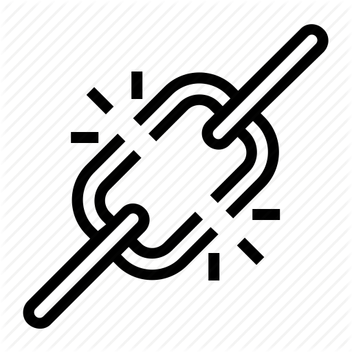

<ion-header>

  <ion-navbar color="primary">
    
    <ion-buttons end>
      <button ion-button icon-only (click)="gotoAddMediaPage()">
        <ion-icon name="add"></ion-icon>
      </button>
    </ion-buttons>
  </ion-navbar>

</ion-header>

<ion-content padding>
  <ion-list>

    <!-- reiterates for each piece of media in list -->
    <ion-item class="center" *ngFor="let media of mediaListRef$ | async" (click)="selectMediaItem(media.key)">
      <div class="left">
        <h1 class="wrapper" text-wrap>{{media.payload.val().title}}</h1>
        
        <p text-wrap>{{media.payload.val().descript}}</p>
      </div>
    </ion-item>
  </ion-list>

</ion-content>
